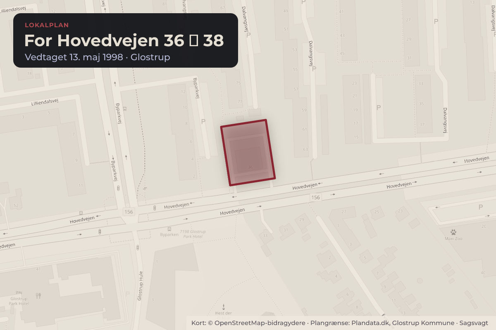
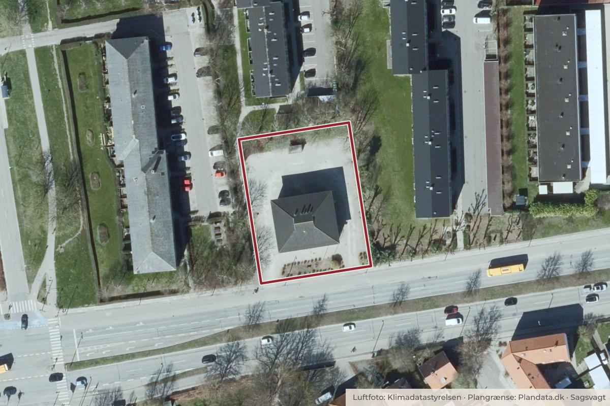

Besluttet 1. oktober, Vækst- og Byudviklingsudvalget, Glostrup
Ansøgning om ny lokalplan for et område ved Hovedvejen og Emilsvej
En skønhedsklinik på Hovedvejen 153 har i strid med den gældende byplanvedtægt G35 opført en tilbygning på 10 m², og der verserer en lovliggørelsessag herom på ejendommen.

Kort: © OpenStreetMap-bidragydere. Plangrænse: Plandata.dk, Glostrup Kommune.

Har du et billede fra For Hovedvejen 36 38? Send det til os
Kort fortalt
- Forslaget
- Der vælges en af de 4 mulige igangsættelser af nyt plangrundlag.
- Hvem
- Vækst- og Byudviklingsudvalget, Glostrup Kommune
- Hvornår
- Torsdag 1. oktober 2026
- Status
- Besluttet. Forslaget godkendt.Beslutningen er forkortet her. Læs hele beslutningen
Læs hele sagen Kommunens egen tekst
Sagsfremstilling
Ejeren af skønhedsklinikken Irelya, der ligger på ejendommen Hovedvejen 153, ansøgte i august 2025 om tilladelse til at opføre en tilbygning på 10 m² med sauna i forbindelse med et udendørs spaområde. Skønhedsklinikken fik afslag på dette med henvisning til den gældende byplanvedtægt. Saunaen er imidlertid opført alligevel, og der verserer derfor en lovliggørelsessag herom på ejendommen.
Ejendommen er omfattet af byplanvedtægt G35 fra 1973, som udlægger området til boligformål i form af åben lav boligbebyggelse.
Der har været klinik på adressen i mange år, og denne erhvervsanvendelse er registreret som eksisterende lovlig anvendelse. En udvidelse af klinikken kan dog ikke tillades. Det vurderes desuden, at det vil stride imod hensynet til naboer i et boligområde, hvis der gives tilladelse til et erhvervsmæssigt udendørs spaområde.
Gennem tiden har der været forskellige ulovlige forhold, men i 2025 skiftede klinikken ejer, og siden har skønhedsklinikken været drevet lovligt og i pagt med gældende regler og lovgivning.
Skønhedsklinikkens ejer har den 7. august 2026 anmodet om en ny lokalplan - eventuelt bare for den ene ejendom.
I kommuneplanen er et område med fire ejendomme på Hovedvejen og Emilsvej udlagt til erhverv (Rammeområde GE22, erhvervsområde ved Hovedvejen og Emilsvej). Anvendelsen er fastlagt til erhvervsområde i form af kontor- og serviceerhverv, administration, serviceerhverv som tandlæge, læge, klinikker, advokat o.l.
Skønhedsklinikken er således i pagt med kommunens planer for områdets fremtidige anvendelse.
Efter planlovens §13 skal kommunalbestyrelsen arbejde for kommuneplanens virkeliggørelse. Det betyder i det konkrete tilfælde, at der enten skal udarbejdes et nyt lokalplanforslag, der er i pagt med kommuneplanens rammeområde GE22, eller at der udarbejdes et kommuneplantillæg, der ændrer på rammeområdets bestemmelser.
Af de fire ejendomme, som er omfattet af rammeområde GE22 er det kun skønhedsklinikken, der er i pagt med kommuneplanrammen. To af de tre øvrige ejendomme er boliger, og den sidste ejendom huser et autoværksted.
Vækst- og Byudviklingsudvalget har i princippet fire muligheder
• Der udarbejdes ny lokalplan alene for Hovedvejen 153. Kommuneplanrammen forbliver uændret og de tre andre ejendomme fortsætter som hidtil – omfattet af byplanvedtægt G35. Dette vil løse den aktuelle problemstilling, men der vil fortsat være uafklarede forhold for de øvrige tre ejendomme.
• Der udarbejdes lokalplan for alle fire ejendomme, hvor anvendelsen fastlægges til erhverv i pagt med GE22. Dette vil have den virkning, at både de to boliger og autoværkstedet vil kunne føle sig presset ud af området.
• Der udarbejdes kommuneplantillæg, der ændrer GE22 til boligområde på linje med byplanvedtægt G35. Dette vil forhindre en naturlig udvikling, hvor ejendommene langs Hovedvejen kan omdannes til erhverv.
• Der udarbejdes både lokalplan og ny kommuneplanramme, som så vidt muligt lovliggør de faktisk eksisterende forhold med både boliger og erhverv af forskellig karakter. Dette vil løse problemstillingen for alle fire ejendomme, men lokalplanen vil i princippet kunne invitere til miljøkonflikter mellem de forskellige anvendelser.
Lovliggørelsessagen er sat i bero, indtil udvalget har truffet beslutning om en eventuel ny lokalplan, der i pagt med kommuneplanen åbner mulighed for erhverv. Hvis der ikke udarbejdes lokalplan, som tillader serviceerhverv på ejendommen, skal MTEU tage stilling til lovliggørelsessagen.
Økonomi
Ingen økonomiske konsekvenser
Indstilling
Center for Miljø og Teknik indstiller:
• at der vælges en af de 4 mulige igangsættelser af nyt plangrundlag.
Beslutning
Henrik Lund (F) foreslår, at der udarbejdes både lokalplan og ny kommuneplanramme, som så vidt muligt lovliggør de faktisk eksisterende forhold med både boliger og erhverv af forskellig karakter (scenarie 4).
For stemmer: Henrik Lund (F), Casper Larsen (I), Allan Brink Christensen (A).
Imod stemmer: Thomas Eggert Sørensen (U), Torben Martinsen (V).
Forslaget godkendt.
Afvigende mening fra Thomas Eggert Sørensen (U):
Bylisten finder det principielt forkert at ændre plangrundlaget for at lovliggøre et byggeri, der bevidst er opført ulovligt efter et administrativt afslag.
Afvigende mening fra Torben Martinsen (V):
Venstre mener at en lovliggørelse vil danne en uheldig præcedens for senere dispensationsansøgninger.
Torben Martinsen (V) og Thomas Eggert Sørensen (U) begærer sagen behandlet i kommunalbestyrelsen.
Bilag
Kilde: Glostrup Kommune, Vækst- og Byudviklingsudvalget, referat fra mødet torsdag 1. oktober 2026, punkt 8. Læs den originale sag hos kommunen.